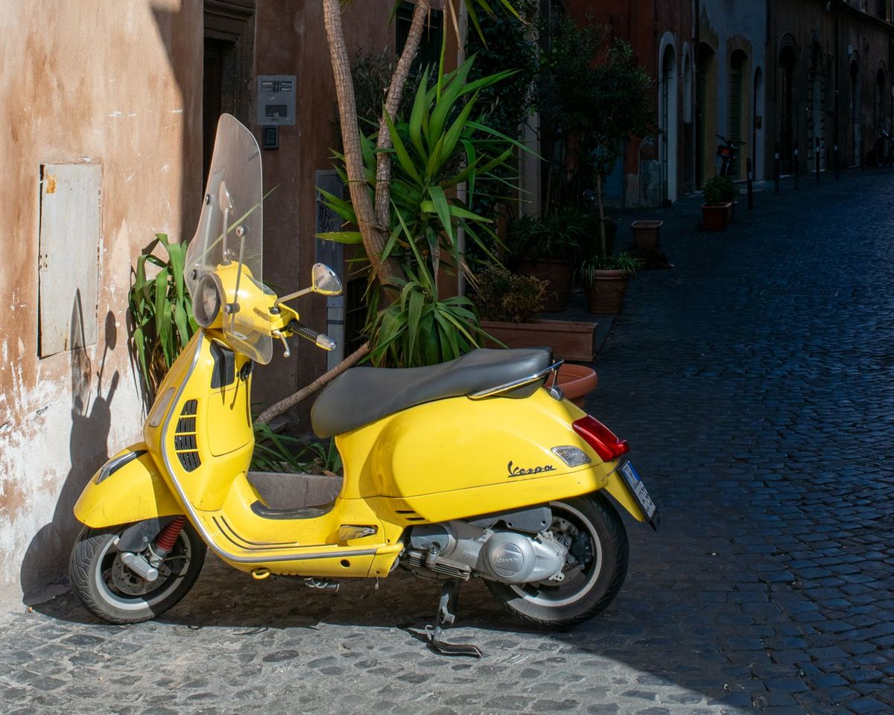

Permis AM — Cyclomoteur
310 €
- Frais de dossier
- 2 heures de théorie
- 6 leçons de conduite avec prêt du scooter
Permis AM · cyclomoteur et voiturette · Fréjus
Scooter ou voiturette : en quelques séances, votre enfant apprend à circuler en sécurité et gagne en autonomie pour ses trajets du quotidien, avec un véhicule prêté par l'auto-école.

Choisir sa formation
Le permis AM ouvre deux possibilités ; la formation est la même, seul le véhicule change.
Pour conduire un scooter de 50 cm³ maximum, limité à 45 km/h. Le scooter est prêté pendant la formation.
Pour conduire une voiturette, dite « voiture sans permis », limitée à 45 km/h. Le véhicule est prêté pendant la formation.
Pas d'épreuve finale : à l'issue de la formation, l'auto-école délivre l'attestation qui permet d'obtenir le permis AM.
Déroulement
Huit heures pour apprendre les bons réflexes, du plateau à la circulation.
Constitution du dossier avec l'attestation de sécurité routière (ASSR 1 ou ASR), obligatoire pour le permis AM.
Les risques propres aux deux-roues et aux voiturettes, les équipements de sécurité, le partage de la route avec les autres usagers.
Maîtrise du véhicule hors circulation, puis conduite en circulation avec un moniteur, sur le véhicule prêté par l'auto-école.
La formation terminée, nous délivrons l'attestation de suivi de formation qui permet de demander le permis AM.
Bon à savoir
Le permis AM est accessible dès 14 ans. Il est obligatoire pour conduire un cyclomoteur ou une voiturette quand on est né à partir du 1er janvier 1988.
L'attestation scolaire de sécurité routière de premier niveau (ASSR 1), passée au collège, est nécessaire pour s'inscrire. Si votre enfant ne l'a pas, l'attestation de sécurité routière (ASR) la remplace.
Vous avez une question sur le choix du véhicule ou sur l'âge de votre enfant ? Notre équipe vous conseille par téléphone ou à l'agence.
Nos forfaits
Accueil, constitution du dossier et fournitures pédagogiques compris. Tarifs TTC, effectifs au 12/04/2026.
310 €
370 €
Tarifs TTC. Le permis AM s'obtient sans examen pratique, à l'issue de la formation. Voir tous nos tarifs →
Questions fréquentes
Le permis AM est accessible dès 14 ans, pour le cyclomoteur comme pour la voiturette.
Nos forfaits sont à 310 € pour le cyclomoteur et 370 € pour le quadricycle léger (voiturette). Ils comprennent les frais de dossier, 2 heures de théorie et 6 leçons de conduite avec le véhicule prêté.
Oui : l'ASSR 1, passée au collège, est obligatoire. À défaut, l'attestation de sécurité routière (ASR) la remplace.
Non. Le permis AM s'obtient après une formation de 8 heures (2 heures de théorie et 6 heures de conduite), sans examen pratique final.
Une question, un devis, une inscription : nous vous répondons rapidement.